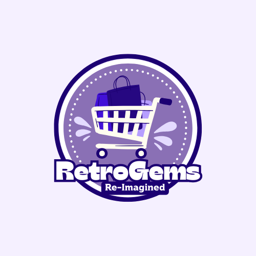
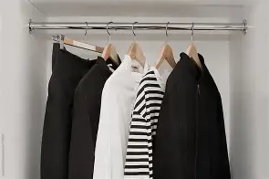

Old Souls, New Life

RetroGems Re-Imagined has no specific target age because fashion is timeless and we believe that whoever finds our fashion worthy of keeping is a timeless soul. We are for all genders
with a slight focus on females and non-binary shoppers who are active in the vintage and fashion space. We are targeting people who are passionate about retro fashion and are confident
in their self-expression. We are targeting an open-minded audience that is interested in sustainable living and eco-friendly shopping and are ready to explore the beauty of vintage
style and upcycled fashion. We are also mainly targeting people who are likely to donate, recycle, or resell clothes rather than throw them away. We are aiming to grow into a nationwide
or international audience through online access